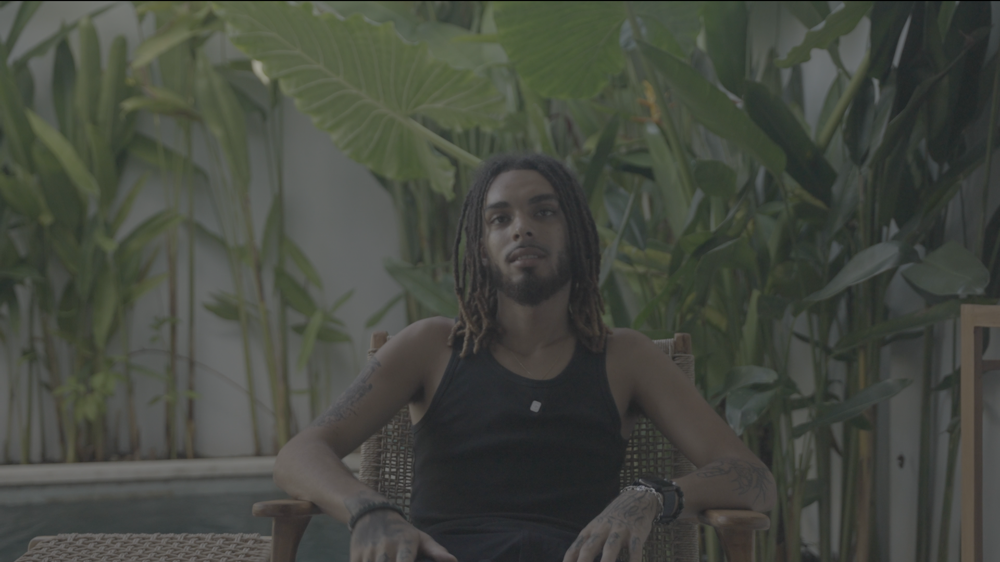
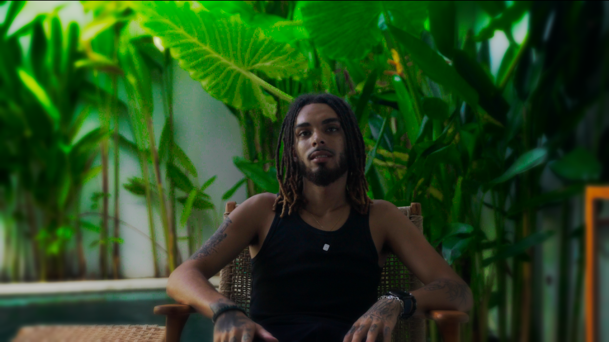
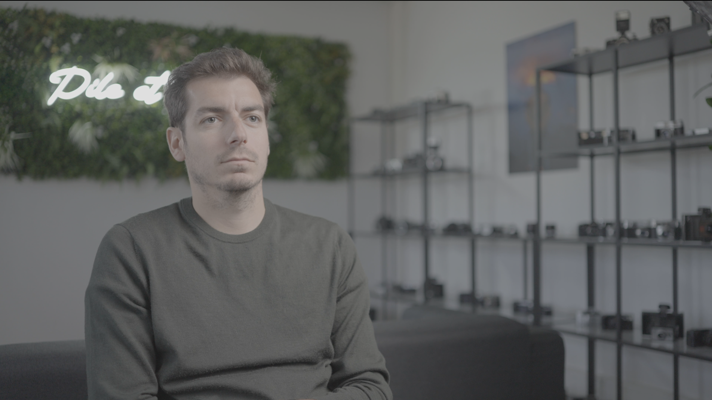
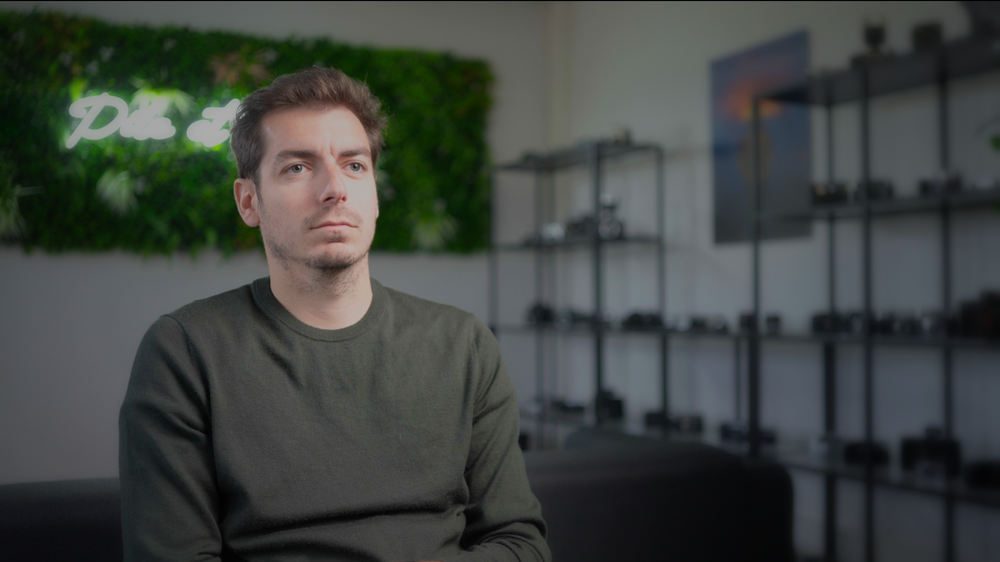
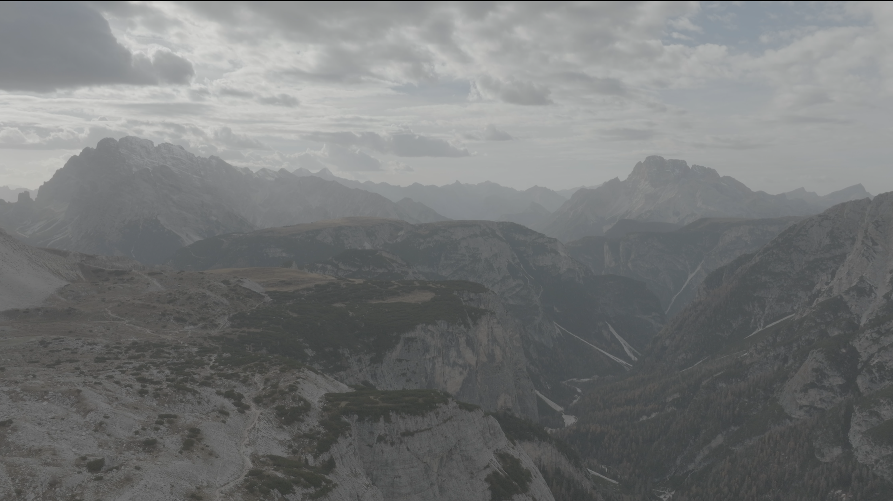
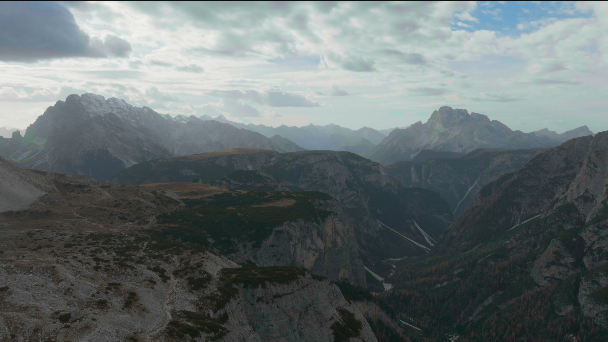

Montage vidéo pour infopreneurs, entrepreneurs & créateurs de contenu
Votre expertise ne manque pas de valeur.
Ne la laissez pas mourir dans un montage que personne ne termine.
Je transforme vos facecams, VSL, Reels et contenus éducatifs en vidéos plus nettes, plus rythmées et plus faciles à suivre — avec un montage où chaque coupe, animation, couleur et son sert votre message.
Montage · Motion design · Étalonnage · Mixage audio
Disponible pour de nouveaux projets
00:01 — Obsession
Une approche de Senior Editor
L'obsession derrière chaque coupe
Je n'ai pas appris la rétention dans un tutoriel. Je l'ai disséquée, image après image.
J'ai analysé des milliers de contenus à haute rétention : facecams, VSL, Reels, documentaires et formats éducatifs. Pas pour collectionner des effets. Pour comprendre ce moment précis où un spectateur décide, presque inconsciemment, de continuer… ou de partir.
J'ai étudié :
- les ouvertures qui créent immédiatement une tension ;
- les changements de rythme qui réveillent l'attention avant qu'elle chute ;
- les silences qui renforcent une idée au lieu de ralentir la vidéo ;
- les animations qui rendent le message plus clair sans voler la vedette ;
- les transitions visuelles et sonores qui poussent naturellement vers la séquence suivante ;
- la manière dont un bon montage prépare le CTA bien avant son apparition.
Un monteur ordinaire demande :« Quel effet puis-je ajouter ici ? »
Un Senior Editor demande :« Que doit ressentir, comprendre et vouloir faire le spectateur dans les trois prochaines secondes ? »
C'est cette question qui dirige chaque décision. Je ne monte pas autour d'un logiciel — je monte autour de l'attention humaine.
Je peux reprendre une coupe que personne ne remarquera consciemment. Rééquilibrer un silence. Retarder une animation de quelques images. Retirer un effet pourtant « joli » parce qu'il affaiblit le message.
Pourquoi cette obsession ? Parce qu'une vidéo ne perd pas son audience d'un seul coup. Elle la perd à travers une succession de petites décisions paresseuses que la majorité des monteurs ne voient même pas. Mon travail consiste à les traquer, puis à construire une vidéo dans laquelle le rythme, l'image, le son et le mouvement travaillent ensemble pour défendre votre message jusqu'à la dernière seconde.
Votre audience ne saura peut-être jamais pourquoi elle est restée.
Elle sera simplement restée.
00:02 — À propos
Je ne remplis pas une timeline.
Je structure l'attention.
Je suis N'fassou Sinayoko, monteur et motion designer spécialisé dans les contenus facecam, documentaires, éducatifs et liés à l'infopreneuriat. Je ne cherche pas à empiler des effets pour prouver que je sais monter : une excellente idée peut perdre toute sa force à l'écran — une hésitation conservée trop longtemps, une séquence qui traîne, une animation qui distrait, une image incohérente, un son qui fatigue — et l'internaute part avant d'avoir compris pourquoi il devait continuer.
Je cherche le moment où l'attention baisse. L'idée qui mérite d'être soulignée. La coupe qui redonne de l'énergie. Le silence qui doit respirer. L'animation qui rend enfin l'explication limpide. Le résultat recherché : une vidéo plus claire, plus maîtrisée, impossible à confondre avec un assemblage amateur.
DaVinci Resolve
Mon niveau, espace de travail par espace de travail
-
Montage
Couper le gras, protéger le message : structuration des rushes et rythmage des contenus parlés.
-
Fusion
Animations, incrustations et habillages qui guident le regard vers l'essentiel.
-
Étalonnage
Correction des couleurs et ambiance cohérente pour que chaque plan appartienne au même univers.
-
Fairlight
Nettoyage et équilibrage audio pour une voix claire, présente et sans distraction.
00:03 — Montage
Ne me croyez pas sur parole.
Regardez ce que le rythme change.
Un bon montage ne se remarque pas seulement par ses effets. Il se ressent lorsque la vidéo avance sans effort, que chaque phrase arrive au bon moment, que l'œil reste occupé sans être agressé et que le message respire sans devenir lent.
00:04 — Étalonnage
Avant / Après
Avant même d'écouter votre message, le spectateur a déjà jugé votre image.
Une mauvaise couleur peut faire paraître un contenu improvisé. Un étalonnage cohérent donne immédiatement plus de contrôle à l'image : peau mieux équilibrée, lumière harmonisée, contraste maîtrisé et ambiance adaptée au sujet.






Pas de filtre posé au hasard. Chaque correction cherche à rendre l'image plus propre, plus cohérente et plus crédible.
00:05 — Reels
Sur mobile, personne ne vous doit son attention.
Un Reel dispose de quelques secondes pour donner une raison de rester.
Si l'entrée est lente, l'idée est enterrée. Si le rythme est confus, le message se disperse. Si tout bouge, plus rien n'a d'importance. Je construis des formats courts qui avancent vite sans massacrer la compréhension.
00:06 — Motion design
Une animation ne demande pas à être admirée.
Elle rend le message impossible à manquer.
Le motion design n'est pas là pour décorer le vide. Il sert à révéler une idée, guider le regard, visualiser une explication ou donner une signature reconnaissable au contenu — de la comparaison avant/après à mes créations personnelles, en passant par l'animation et l'habillage graphique.
00:07 — Contact
Merci.
Votre prochaine vidéo peut encore ressembler à des rushes assemblés. Ou montrer immédiatement que votre message mérite d'être écouté.
Ce travail est adapté si vous produisez des vidéos facecam, des VSL et contenus de vente, des Reels et formats courts, des contenus éducatifs ou documentaires, ou toute vidéo nécessitant animations, étalonnage ou nettoyage audio.
Envoyez-moi votre format, la durée prévue, votre échéance et une référence du style recherché. Je vous répondrai personnellement pour cadrer le projet.
Disponible pour de nouveaux projets
N'fassou Sinayoko — Monteur & Motion Designer — Reel 2026